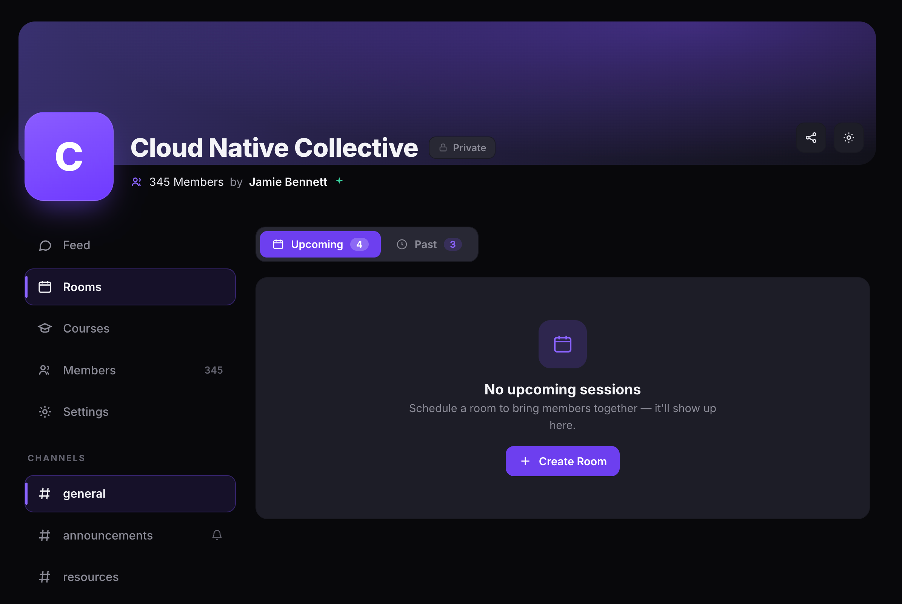
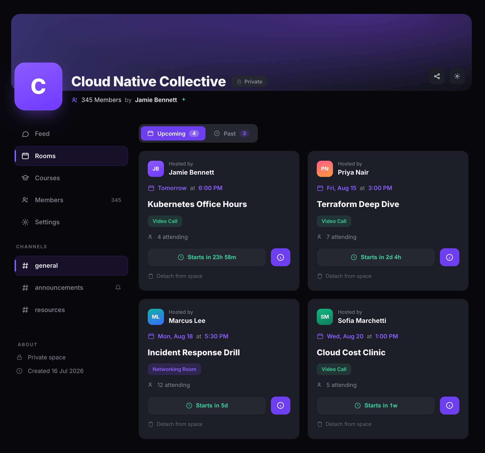
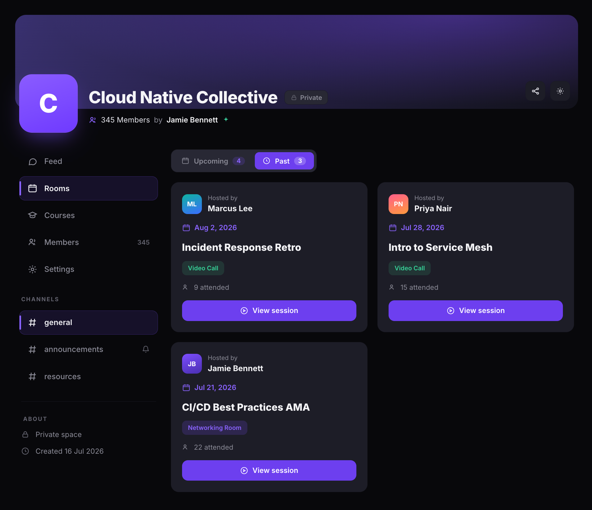

Manage community rooms
Schedule and manage rooms directly from your community. The Rooms tab shows all upcoming and past sessions hosted within the community, and lets you create new video calls or speed networking rooms for your members.
Before you get started
- You must have an Admin or Moderator role in the community.
- The Rooms tab must be visible in your community navigation. See Manage community navigation to show or hide it.
Open the Rooms tab
- Navigate to your community page.
- Click Rooms in the left sidebar.
- The Rooms tab shows two sub-tabs: Upcoming and Past, each with a badge showing the number of sessions.
If no sessions have been scheduled yet, the Upcoming tab shows an empty state with a No upcoming sessions message and a + Create Room button.

Create a room in your community
- On the Rooms tab, click + Create Room.
- On the Create New Room page, choose an event type:
- Mingling Room — a structured event with lobby, matching algorithm, and 1:1 meeting rooms. Use this for speed networking sessions.
- Video Call — a direct call without matching or lobby, just a simple group video meeting. Use this for workshops, office hours, panels, and webinars.
- Follow the setup steps for your chosen room type. See Schedule a live session for video calls or Create a speed networking room for mingling rooms.

View upcoming sessions
The Upcoming tab shows all scheduled sessions that have not started yet.
- Click the Upcoming tab on the Rooms page.
- Each room card shows:
- Host name and avatar.
- Date and time of the session.
- Session title.
- Room type badge — Video Call or Networking Room.
- Attending count — the number of members who signed up.
- Countdown — how long until the session starts.
- Detach from space — remove the room from the community without deleting it.

View past sessions
The Past tab shows all completed sessions hosted within the community.
- Click the Past tab on the Rooms page.
- Each room card shows:
- Host name and avatar.
- Date of the session.
- Session title.
- Room type badge — Video Call or Networking Room.
- Attended count — the number of members who attended.
- View session — click to open the room detail page with recordings, discussions, and polls.

Tip: Click View session on a past room to access its recordings, discussions, and poll results. See Manage recordings for details.